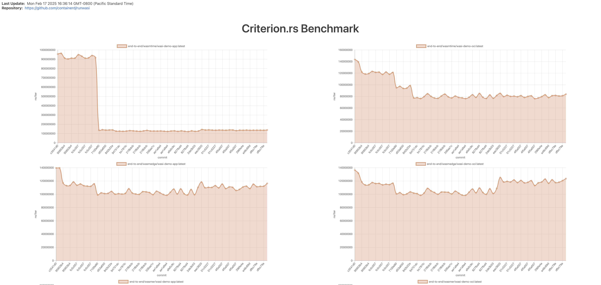

Runwasi Benchmarks
Overview
This document outlines the various methods and ideas for benchmarking runwasi shims. The goal is to provide a structured approach to measuring the performance of the runwasi shims and comparing it against other container runtimes, such as runc or crun. These benchmarks will help track performance changes across different versions and explore how well runwasi scales in high-density environments.
Benchmarking Goals
- Establish a baseline performance for
runwasishims - Measure the impact of changes to the source code and version upgrades on performance
- Test the density of
runwasishims in a single node. - Visualize the performance data over time.
- Identify areas for further optimizations
Approaches
1. Baseline Performance
To establish a baseline performance, we use the “ghcr.io/containerd/runwasi/wasi-demo-app:latest” and “ghcr.io/containerd/runwasi/wasi-demo-oci:latest” images. These images are simple demo apps that echoes "hello" to the console using WASI. We run end-to-end benchmarks for wasmtime, wasmedge, wasmer and wamr runtimes and measure the execution duration. The result can be found in dev/bench website, under the “Criterion.rs Benchmark” section.
The source code for the benchmarks can be found in benchs/containerd-shim-benchmarks directory.
2. Stress Test
stress-test is a CLI that runs a stress test for the runwasi shims. It allows us to deploy a large number of Wasm-based tasks to evaluate task throughput (number of tasks finished per second) under high-density environments. The stress test supports running workloads with mocked containerd server and a real containerd server and supports running N tasks in total with M concurrent tasks. The result can be found in dev/bench website, under the “Stress Test Benchmark” section.
3. Memory
We’ve added functions to collect memory usage data from the shim and zygote processes. We use scripts/benchmark-mem.sh script to collect the data. The result can be found indev/bench website, under the “Criterion.rs Benchmark” section.
4. Networking
This is for Wasmtime shim. We use hey to load test the Wasmtime shim running “ghcr.io/containerd/runwasi/wasi-demo-http:latest” workload. We measure the HTTP throughput and latency of the workload. The result can be found in dev/bench website, under the “HTTP Throughput” and “HTTP Latency” sections.
5. Runwasi vs. Native Execution
We built a distroless container image with wasmtime runtime installed. Then we run stress-test for wasmtime shim and the distroless container for the same workload. The result is shown below.
| Runtime | Tasks | Time | Throughput |
|---|---|---|---|
| runwasi wasmtime | 1000 | 3s 31ms 663us 672ns | 329.85 tasks/s |
| runc distroless wasmtime | 1000 | 11s 795ms 27us 285ns | 84.78 tasks/s |
The Dockerfile for the distroless container is shown below.
# syntax=docker/dockerfile:1.13-labs
FROM rust AS build-base
RUN rustup target add x86_64-unknown-linux-musl
RUN apt-get update -y && apt-get install musl-tools -y
FROM build-base AS wasmtime-build
RUN cargo install \
--target='x86_64-unknown-linux-musl' \
--profile='fastest-runtime' \
--config='profile.fastest-runtime.strip="symbols"' \
--config='profile.fastest-runtime.panic="abort"' \
wasmtime-cli
RUN cp $(which wasmtime) /wasmtime
FROM scratch AS wasmtime
COPY --from=wasmtime-build /wasmtime /
FROM build-base AS wasm-tools
RUN cargo install wasm-tools
FROM wasm-tools AS build
COPY hello.wat /
RUN wasm-tools parse </hello.wat >/hello.wasm
FROM wasmtime AS final
COPY --from=build /hello.wasm /
ENTRYPOINT ["/wasmtime", "/hello.wasm"]
6. Visualize the Performance Data
We use benchmark-action to visualize the performance data and we have a benchmark CI job that runs every day at midnight UTC. It will aggregate the result from the daily benchmark and visualize it in a chart. Any regression detected will be notifying to the runwasi-committers group. The result can be found in dev/bench website.

Contributing to the Benchmarks
If you want to contribute to the benchmarks, whether it’s adding a new benchmark or improving the existing ones, or just want to share your ideas, please refer to the following issue:
Any PRs are welcome!